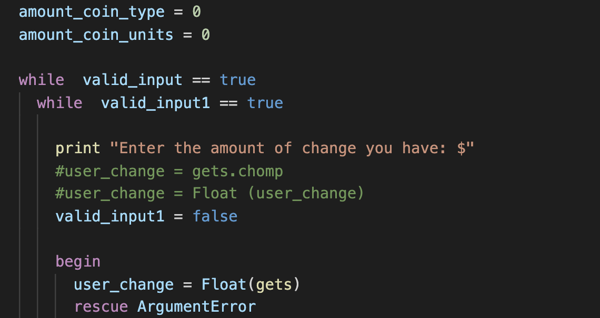
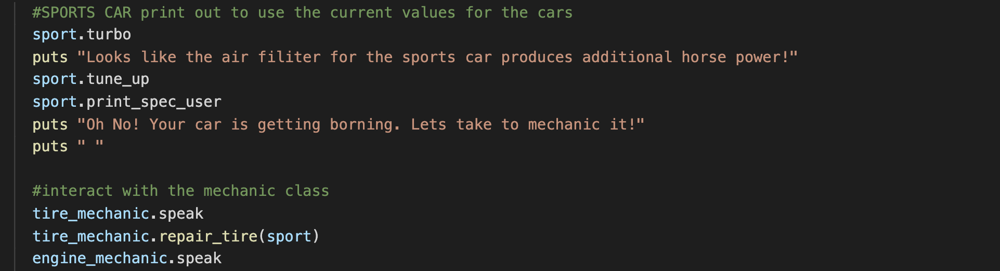
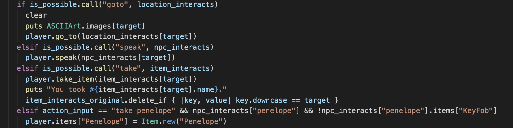

| Project |
Summary |
Snipt of Code |
| Cash Money |
The program will take the amount of money the user has and provide them back with the lowest amount of change in coins. It will display the amount of each coins the machine will dispense. |
 |
| Oopsie Crazy |
This program was created to test the interaction between the Car and Mechanic Class. In this program there is various car objects, created through unique attributes based on sub-class. These objects interact with different level of mechanics. Depending on the car and the type of mechanic, the repair on the cat varies. |
 |
| Shopi🔥'd |
This was a team project in collaboration with Carmela, Edward, Eric, and Rachel. This application was a text-based adventure designed to help a Shopifolk who has lost their fob. They navigate through Toronto in search of the fob interacting with other characters and objects. |
 |